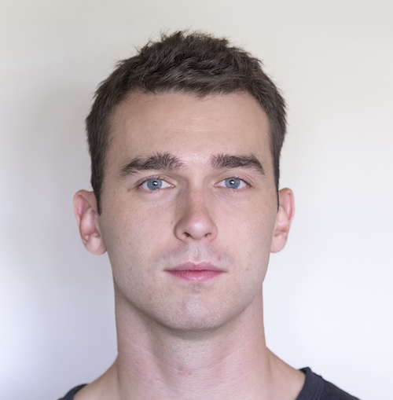

Photo byI'm a mathematics PhD student at UC San Diego, supervised by Kiran Kedlaya. My academic research focuses on arithmetic geometry and condensed mathematics. I am also interested in Lean, autoformalization, and AI safety.
I'm working at Meta on a project aimed at the Lean formalization of topics in arithmetic geometry.
I'll finish my PhD in December 2026, and I'm looking for full-time roles in industry and academia, especially in AI safety, starting January 2027.
This webpage is currently under construction, but you can find my CV and email below.